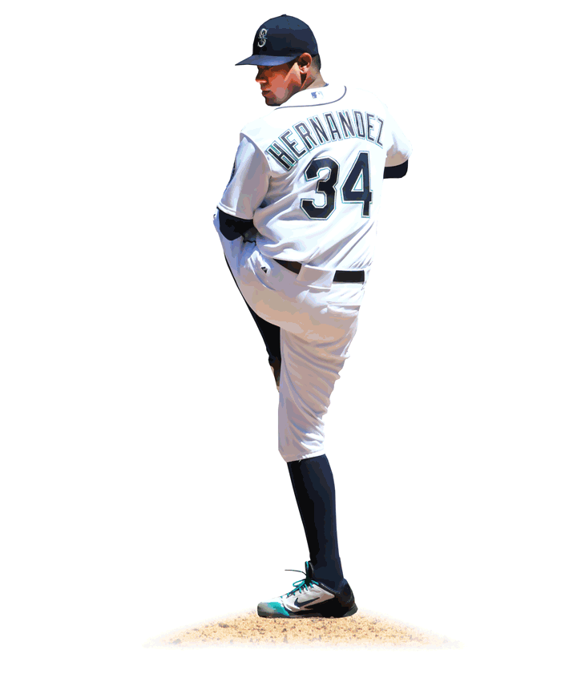
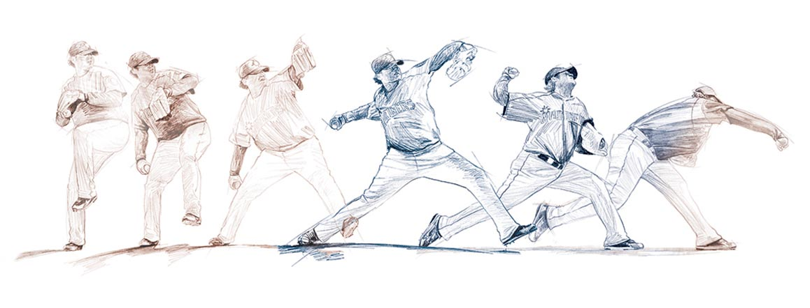

<%= markdown.storyIntro %>
<%= t.include("_pitches.html") %>
<%= t.include("partials/_ad.html", { type: "square" }) %>
<%= markdown.storyDurability %>
<%= t.include("_graphs.html") %>
<%= markdown.storyPitching %>

Susan Jouflas / The Seattle Times